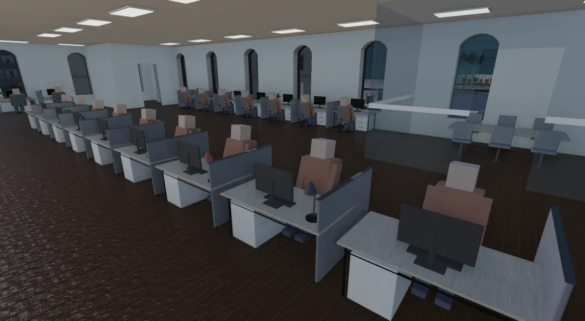
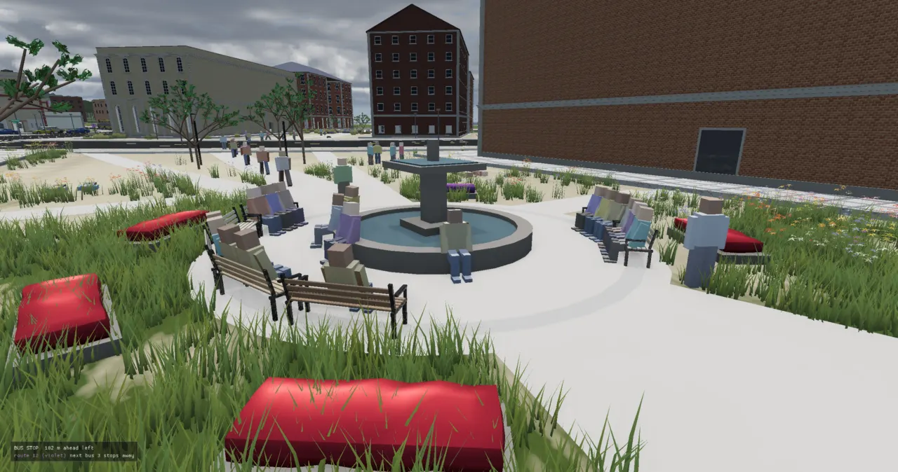
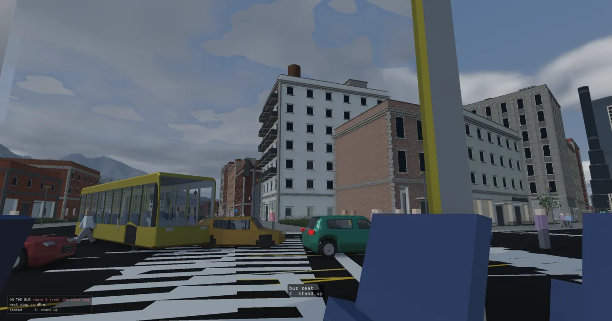
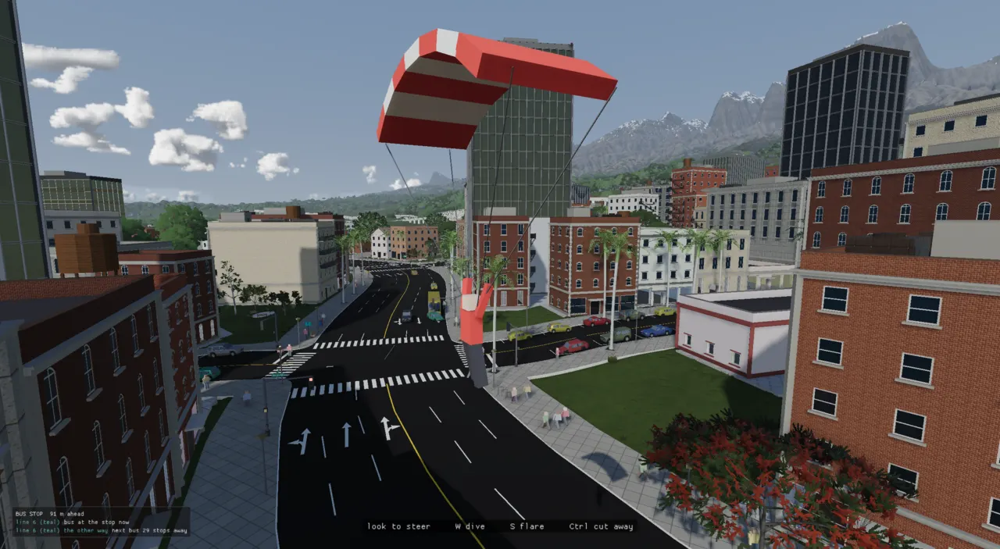

The living city
Every person and car in a city is an agent: a small record with a home, a job, a role and a day,
run by one deterministic simulation (CitySim). The idea that makes it scale is that an agent is
simulated only as finely as anyone can see: in full near the player, coarsely further out, not at all beyond
that, and drawn far away by a compute shader that only needs its route and the clock.

The older page How the City Thinks covers the early perception design (vision
cones, signals, the first reactive walkers). This page is the system as it stands at commit
47d587f3: the day, the goals, the tiers, the scale work, transit, junctions and possession.
The problem
A procedural city is beautiful and empty. The roads, lots and buildings are generated, but nothing moves in them, and nothing has a reason to. The wish (ADR-0059, June 2026) was cars and pedestrians that use the generated roads, agents with a reason to move ("a daily schedule, home → work → home"), and later a city you can walk through at a real 1:1 clock and follow one person through their day.
Three things make that hard. Cost: the island level counts its walkers in the hundreds of thousands (ADR-0150 measured about 204,000) and has been pushed to 515,191 agents in all; nothing that touches every agent every frame survives that. Continuity: someone you turn away from must still be there, further along, when you turn back. Determinism: the engine's simulations replay from a seed (ADR-0002), so the same seed must give the same city, and identity, routing and parallel placement must not disturb the random-number stream.
An agent's day, as a flow
Everything an agent does comes from one chain. Its role (commuter, shopkeeper, student, waiter...) sets the parts of its day. The day is a goal table: a small state machine whose states either rest or go somewhere. When the clock, an arrival or a timer fires an event, the table picks the next state; a go state names a target (work, home, a café from a menu); the target becomes a node on the road graph; A* finds a route; and the agent moves along it at whatever level of detail its tier allows. Arriving fires the next event.
The chain behind every agent. Columns 1–4 are decided at transitions, which at the 1:1 clock happen minutes apart; column 5 runs every tick, at a cost set by distance from the player.
What an agent is
CitySim (src/apps/citysim/city_sim.h) owns one flat array of Agent
structs and everything they share: the road graph, the places and venues, a goal table per role, the activity
catalog, the bus network, the taxi dispatch, and spatial grids for neighbour queries. The ADR-0060 framing
still holds: an agent is a brain (data); a car is an inert vehicle until an agent possesses it. A
pedestrian is a brain with no car; a driver owns one (Agent::car) and is in it while driving
(Agent::vehicle). mode says how it moves right now; archetype says what it
is for the whole run, so a driver who parks and walks to a door doesn't switch to a pedestrian's day.
The main types. Solid arrows: what CitySim owns. Dashed: what an agent refers to by
index (a node, a place id). The renderer, the walker bodies and the vehicle bridge live in separate systems
(CityRenderSystem, CityWalkerSystem, CityVehicleSystem) and read the sim.
The tier field is the heart of the scaling story. Its comment is the best short description of the four levels of detail in the code:
// Simulation tier (P4 three-tier traffic). K (Kinematic) is the full agent // as it always ran: sensing, FSM, signals, render bake, kinematic proxy. // V (Virtual) is a persistent FAR agent: full identity + exact route state // (link, lane, param, speed) but no rendering, no physics proxy, no // sensing/FSM and no live signal queries — it traverses its real A* route // on a coarse ~1 Hz tick at a modelled speed (class speed shaped by fixed // average junction delays), so promotion finds it where it should be. // P (the physical Jolt tier) stays what it was: possessTier's overlay on K. // Everything is K until a level opts in (CitySim::tieringEnabled) AND a // player position is fed (setTierCenter) — headless sims are unchanged. // D (Dormant) is the tier BELOW V: not simulated at all, not even coarsely. // A V agent still walks its route link by link once a second — cheap, but // not free, and there are thousands of them. A D agent costs nothing: when // the player comes near it is reconstructed from its own schedule // (scheduleSnapshot) and handed to V. // // Its CAR is untouched by any of this. Dormancy strips the agent, never the // vehicle — a parked car keeps its pose, its bay, its instance and its // proxy, which is what lets it still be seen, collided with and stolen // while its owner does not exist. enum class Tier : uint8_t { D, V, K };
The ground it walks on: NavGraph, places and identity
The NavGraph (src/engine/ai/nav_graph.h, ADR-0059) is the road network kept alive at
runtime. The road builder used to sample every road into a fine polyline, stroke the asphalt, and throw the
graph away; now the same graph survives as a directed lane graph. Each road edge becomes two
NavLinks, one per direction (one for a one-way ramp), each a straight segment, so a curved
street is a chain of short links. Traffic keeps left, UK/Japan style: the helper called
rightOf in nav_graph.cpp is named for the maths and points to the driver's left.
struct NavLink { int from = 0; // NavGraph node index (tail) int to = 0; // NavGraph node index (head) Real length = 0; // segment length (m) Real width = 8; // carriageway width of the source road (m) RoadClass klass = RoadClass::Local; int lanes = 1; // lanes available in THIS direction int layer = 0; // grade-separation level (0 = ground, >0 = bridge)
Further fields carry deck heights, one-way flags, access bits (walkable, frontage, signalable), the parking band, and whether the link is a footpath: park and quad walks are appended at load as walker-only links that vehicle routing never takes. Routing is one A*, shared by cars and walkers:
// A* over the directed lane graph (ADR-0059). Cost is TRAVEL TIME // (length / classSpeed), so routes prefer arterials over local streets like real // driving; the heuristic is straight-line time at the fastest class speed // (admissible -> optimal). Deterministic: ties broken by link index. Returns an // empty Route if the goal is unreachable (or equals the start). // `onFoot`: skip Freeway/Ramp-class links — a pedestrian must never route // along a carriageway (§10.5; the unified graph made those links visible to // every consumer, including walkers). // ... Route findRoute(const NavGraph& graph, int startNode, int goalNode, bool onFoot = false, const std::vector<Real>* linkCostScale = nullptr);
The optional linkCostScale is how the bus planner spreads its routes: it charges extra for a
street another route already drives.
Places (the second ADR-0066, "The Living City") give that graph somewhere to go. A Place
is a typed building (home, shop, office, park, civic, and later cafés, bars, clubs, libraries, teaching halls)
with a door snapped onto the pavement of its frontage street, hours, and a capacity. Generated
buildings become places automatically (each shop front a place of its own), and
assignPlaces gives every agent a home and a job it can actually reach. Since ADR-0150 homes and
jobs are drawn in proportion to floor area, so a 30-storey block of flats houses more people than a
bungalow. Identity is an AgentId: a dense UID handed out at build from a counter
separate from the simulation's random stream, so adding identity changed no seeded test. Relationships
(coworker, neighbour) are single tags on UID pairs, deliberately shallow.
A dead walkable graph. ADR-0066 Phase 2 built a separate pedestrian graph
(ped_graph.{h,cpp}: corner nodes, sidewalk edges, a door node per place) so a walk could start
and end at real doors. Its live integration was deferred, and walkers ended up routing on the NavGraph itself
(findRoute(..., onFoot=true) plus footpath links and door positions). At 47d587f3,
pedRoute has no caller outside its own test.
Roles: one system describes every resident's day
Glenn asked for "a singular system that can describe all of the npc roles" (2026-10-06). A role is
data: the parts of a day — whether it commutes, how long before a break, what the break is, whether breaks
repeat (class, break, class...), an errand on the way home, an evening menu and how often it goes out — plus,
for a staff role, which places it staffs and on whose hours. Roles are authored in
assets/scripts/roles.lua; the same catalog is built into C++ as
defaultRoleCatalog, and a test keeps the two describing identically.
roles = {
order = { "commuter", "shopkeeper", "stroller", "student",
"teacher", "librarian", "manager", "waiter", "cook", "clerk", "bartender" },
-- to work, lunch about four hours in (or brought, and stays in), the afternoon, the errand on the way home
commuter = {
day = { work_before_break = 4.0, pause = { target = "lunch", label = "Lunch", hours = 0.6 }, errand = true,
evening = "evening" },
night_out = 0.22,
},
-- ...
-- the floor: on the place's hours, no break out (they eat at work), straight home
waiter = {
day = { evening = "evening" },
night_out = 0.10,
staff = { places = { "restaurant", "cafe" }, per_place = 3, hours = "place" },
},
One composer, buildDayTable, turns any role's RoleDay into its goal table, always
from the same vocabulary of state names. A commuter's day comes out like this:
The commuter's table as buildDayTable writes it (one break, then AtWorkPM;
an errand on the way home). Missing transitions are the noRoute fallbacks, each landing
somewhere sensible. A stroller's day is a different branch of the same function: outing, pause, outing, home.
} else { const bool breaks = d.workBeforeBreak > 0 && d.breakTarget != GoalTarget::None; const bool once = breaks && !d.breaksRepeat; // one break, then the afternoon t.addState("ToWork", GoalAction::GoTo, GoalTarget::Work, Activity::Commuting); t.addState("AtWork", GoalAction::Rest, GoalTarget::None, Activity::AtWork, breaks ? d.workBeforeBreak : 0.0); if (breaks) { t.addState("GoBreak", GoalAction::GoTo, d.breakTarget, d.breakActivity); // ... } // ... t.addTransition("AtHome", GoalEvent::DepartWork, "ToWork"); t.addTransition("ToWork", GoalEvent::Arrived, "AtWork"); t.addTransition("ToWork", GoalEvent::NoRoute, "AtHome"); t.addTransition("AtWork", GoalEvent::DepartHome, leave); if (breaks) { t.addTransition("AtWork", GoalEvent::DwellDone, "GoBreak");
Staff and opening hours (ADR-0147). Staff come out of the existing population: each place of a staff
role's kinds pulls its staff from the commuters living nearest it. A Venue then carries a 24-bit
staffed mask — bit h set when someone hired there is at work at h:30 — and
Venue::openAt requires the bit. Every customer chooser (outings, lunch, the evening, activities)
asks openAt, so none of them needed changing. On island_8_nature that gates 2,585 shops, cafés,
restaurants, bars and clubs: 1,315 staffed at 10:00, 742 at 22:00. Two kinds of place keep their posted hours
anyway: one nobody was hired at, and one whose staff the schedule never has at work.


Goals as data: the GoalTable
Before ADR-0064 the day was a hand-written switch inside CitySim::step, and every new
behaviour meant editing the simulation. Now it is a GoalTable
(src/apps/citysim/city_goals.h): named states, each binding one action from a deliberately tiny
C++ vocabulary — Rest or GoTo(target) — and transitions on a fixed set of events
that the sim emits. The table rides the engine's generic StateMachine, so one table per
archetype drives every agent; an agent holds only the int Agent::goal.
struct GoalState { std::string name; GoalAction action = GoalAction::Rest; GoalTarget target = GoalTarget::None; Activity activity = Activity::AtHome; double dwellHours = 0; // 0 = rest forever (only events can end it) // GoalTarget::Activity: the spot kinds it takes (spotKindBit) and the tags the spot must carry (spot_tag) -- or, // when `menu` names one, a pick from that menu of the activity catalog (activities.h) uint32_t spotKinds = 0, spotTags = 0; std::string menu; };
Targets cover more than home and work: Shop, Lunch, Outing,
Campus, Activity (a menu pick), and the dynamic ones a taxi or bus table uses
(Fare, Drop, Stop, Depot), looked up in the dispatch rather than
stored on the agent — which is how one mechanism drives a resident, a cab and a bus. Firing an event is a
lookup, then either a state change or a departure, gated so that the step's routing budget and a parked
car's clearance are respected:
CitySim::GoalFire CitySim::tryGoalEvent(Agent& a, GoalEvent event) { const GoalTable& t = tableFor(a); int next = t.onEvent(a.goal, event); if (next < 0) return GoalFire::NoRow; const GoalState& to = t.state(next); if (to.action == GoalAction::GoTo) { int from = departNode(a); // ... if (a.archetype == Agent::Mode::Driver && !a.far() && !isBus(indexOf(a)) && !launchClear(a, from)) return GoalFire::Blocked; if (!isBus(indexOf(a)) && departuresThisStep_ >= kDeparturesPerStep) return GoalFire::Blocked; // the step's routing budget is spent: leave next tick ++departuresThisStep_; a.goal = next; a.goalHours = 0; startGoalTrip(a, from, /*fromRest=*/true); } else { a.goal = next; a.goalHours = 0; a.activity = to.activity; } return GoalFire::Fired; }
Load-time Lua, tick-time C++. agents.lua, roles.lua and
activities.lua are read once at level load into these tables; nothing scripted runs in the tick.
That keeps the tick deterministic and cheap, keeps the headless test build Lua-free, and turns a broken script
into a loud load error. When the tables replaced the old switch, the built-in tables were checked
to reproduce the old behaviour bit-exactly: an FNV hash over every agent's pose, speed, activity and
trips across seven seeded scenarios, identical before and after, now pinned as
installing_the_default_tables_changes_nothing.
Sleepers. An agent resting at a door has nothing to decide until its own day says so, so it names the
sim-second it next needs thinking about (Agent::wakeAt) and drops out of the active list. Measured
on metro v2 (2026-09-16), about 45% of near agents were asleep at any moment, and at 03:00 all of them — which is why a city can look
static while working correctly.
Activities: what people go and do
A day's Outing, Lunch or evening is not hard-coded. It is a pick from a
menu in the activity catalog (assets/scripts/activities.lua, mirrored by
defaultActivityCatalog). An activity says what sites it uses (a café, a bench, a lawn, a pitch,
"street"), when it is offered, how long it lasts, how far people will go for it, and how the body performs it
(inside, outside, at a spot, wandering, or roaming in a group). A menu is a list of hour bands, each with
"first" chances tried in order and then a weighted pick:
outing = {
{ hours = { 5, 10.5 }, first = { { "bench", 0.20 }, { "across_town", 0.10 } },
pick = { { "coffee", 4 }, { "park_visit", 3 }, { "groceries", 0.5 }, { "civic_visit", 0.3 }, { "walk_round_block", 3 } } },
{ hours = { 10.5, 14 }, first = { { "bench", 0.25 }, { "across_town", 0.14 } },
pick = { { "browse", 2.5 }, { "meal", 2 }, { "coffee", 2 }, { "park_visit", 3 }, { "civic_visit", 0.7 }, { "walk_round_block", 2 },
{ "picnic", 1.5 }, { "sunbathe", 0.8 }, { "chat", 1 } } },
{ hours = { 14, 17.5 }, first = { { "bench", 0.30 }, { "across_town", 0.14 } },
pick = { { "browse", 2.5 }, { "groceries", 1.5 }, { "park_visit", 3 }, { "coffee", 1.5 }, { "civic_visit", 0.7 }, { "walk_round_block", 3 },
{ "sunbathe", 1 }, { "catch", 0.8 }, { "chat", 1 }, { "picnic", 0.5 } } },
{ hours = { 17.5, 23 }, first = { { "bench", 0.15 }, { "across_town", 0.10 } },
pick = { { "meal", 3 }, { "coffee", 1 }, { "park_visit", 1.5 }, { "groceries", 1 }, { "walk_round_block", 2 },
{ "chat", 1 }, { "catch", 0.5 } } },
{ hours = { 23, 5 }, first = { { "bench", 0 }, { "across_town", 0 } },
pick = { { "walk_round_block", 1 }, { "park_visit", 0.5 } } },
},
CitySim::pickFromMenu replaced three hand-written choosers (pickOuting,
pickLunch, pickCampusBreak survive as one-line wrappers that name a menu). Group
activities — a kickabout on the campus pitch, a chat circle or picnic on a lawn — are sessions: a
definition with roles, a formation and a pose (stand, sit on the ground, lie), joined by whoever turns up,
started when enough have, abandoned if not. CitySim::restPose is the one place both drawers (the
instanced crowd and the near bodies) ask how a resting person stands, sits or lies.
Moving: reactive agents and the cognition loop
The first city sim (ADR-0060) moved agents by global plans: compute an A* route, snap along lanes leg by leg. That teleported at nodes and let agents drive through each other. ADR-0061 made agents reactive: each one perceives only what falls in a vision cone, runs a small state machine (walker: resting, walking, avoiding, waiting; driver: cruising, following, yielding, turning, waiting), and outputs a steering intent, not a jump. ADR-0063 then gave them an inner life between frames:
ADR-0063's five stages, each a small pure primitive in src/engine/ai/, composed inside
CitySim. K-tier agents only: V and D agents neither sense nor decide.
struct TrackedBody { int id = -1; // the caller's stable body id Vec2 pos; // best current estimate (extrapolated while unseen) Vec2 vel; // smoothed velocity estimate (m/s) Vec2 seenPos; // raw position at the last actual sighting Real lastSeen = 0; // sim-time of that sighting Real confidence = 0; // 1 = just seen, decays to 0 = forgotten bool hasVelocity = false; // one sighting can't give a velocity yet }; class AgentMemory { public: Real memorySeconds = 4.0; // unseen tracks survive (and extrapolate) this long Real velocityBlend = 0.5; // EMA weight of the newest velocity estimate std::size_t maxTracks = 32; // hard cap: weakest track evicted when full
Why memory matters: a car that saw a person step behind a van keeps expecting them where they were
heading, and creeps to that spot instead of accelerating into it (pinned by
cars_remember_a_person_after_losing_sight). Why a slow think cadence: walkers that
re-decided every 100 ms visibly "wigged out"; deciding every 0.35 s (staggered per agent) and committing
reads as intent. Controllers stay per tick for stability; decisions go slow for commitment.
Cars are deliberately not in each other's vision cones: lanes, car-following gaps and signals govern
car-against-car, because braking for cross and oncoming cars in the cone deadlocked traffic. They do sense
walkers, the player, and real physics vehicles (the player's car reaches the sim as an external obstacle with
a half-length). Two cars that still meet on a closing course have a fender-bender: both freeze, then
resume on staggered holds — they must collide, not ghost (cars_crash_and_stop_instead_of_ghosting).
Junctions
Junctions are where an agent sim earns or loses its credibility, and most of the city's hardest bugs lived here. The rules that stuck, in the order they were learned:
- Stop lines that read as obeyed (ADR-0063): the line sits back by the junction box radius plus the
zebra band plus half the car, so a car holding at red stands short of the crosswalk, not in the middle of it.
Signals gained an all-red clearance so the box drains before cross traffic goes. ADR-0063 set green 12 s and all-red 2.5 s; the code now defaults to green 10 s, yellow 2 s, all-red 1.5 s and a walk phase of 8 s, because longer cycles queued more cars per red than small blocks hold (
SignalController::build). - Don't block the box: no car crosses its line while a crossing car is inside; a turn waits for oncoming traffic, with agent order breaking the tie between two stopped opposing turners.
- Knots and rings (ADR-0066): curvy generated crossings planarised into several nodes joined by car-length stubs, each node's box swallowing its neighbours' stop lines — a circular wait. Junction nodes within 7 m now merge, box radii are capped at 60% of the shortest arm, and a gridlock clock lets a car pinned 6–12 s stop yielding to stalled traffic and creep at 0.7 m/s. Worst all-stopped streak: 328 s → 9 s.
- Think in route metres, not links. Metro's graph cuts streets into ~4 m links, so any rule written as
"the current link" silently meant "4 m". Stop lines, signals and yields are found by
junctionAheadalong the route; car-following chains 60 m. - Promotion is a pile-up source. A far car drives blind, so handing it to the full sim at cruise put it
0.9 m behind a stopped queue.
clearPromotionseats it behind the last body in its corridor at that body's pace, or leaves it far to try again.

Gates: metro_junctions_stay_clear (level tests; thresholds stuck < 300 car-seconds, overlaps
< 800, from about 3,732 and 5,535 before the route-metre fixes) and
city_phys_tier_packed_junction_does_not_pile_up (a physics soak).
Cars: one car system, two motion owners
ADR-0062 started from Glenn's requirement: "one car system". The player can walk up to any car and drive
it, ejecting whoever was inside, and every car drives the same because every car is the same object. Whoever
drives speaks only through one seam, a DriverInput {throttle, steer, brake, handBrake}, produced
for AI by the pure computeDriverInput in src/engine/ai/driver_agent.h.
The first design made every ambient car a Jolt vehicle chasing a kinematic planner "ghost". Three device rounds of jammed junctions later, the ADR records a rethink: two clocks over one car (the planner's and the physics') meant every fix was another reconciliation loop — "the signature of a structural error, not a tuning problem". Pedestrians worked because their body was trivially commandable: one authority. So now there is one motion owner per regime:
"One car system survives where it matters — one component model, one fleet body, one enter flow, one physics API — while motion is owned per regime by the machinery that is good at it" (ADR-0062).
The vehicles page covers the bodies, the Jolt handling and the driver's seat.
Tiers of detail by distance
This is the second centrepiece: how a city of hundreds of thousands costs a few milliseconds. The rule from
the measurements (below) is that cost is neighbour sensing in the near tier — position integration is
nearly free — so the lever is how many agents are near, never the total. Every distance below is measured from
the player (setTierCenter), with hysteresis between the in and out radii so agents on a boundary
don't flap.
The bands, at their default radii (CitySim and CityRenderSystem fields).
The upper block is how an agent is simulated; the lower is how a far one is still drawn.
| Tier | Simulated as | Drawn as | Costs |
|---|---|---|---|
| P | K, plus a physical body: a Jolt character capsule for the nearest walkers; cars only when promoted (or physicalCars) | its own entity, posed limbs | a fixed budget: maxWalkerBodies 200 |
| K | everything: sensing, memory, FSM, signals, junction rules, fender-benders, seats and sessions | instanced meshes, lamps, debug rings | 3–30 µs an agent, rising with local density |
| V | its exact route at a modelled speed, once a second, blind (no sensing, no queues) | GPU crowd stand-in (or a CPU band where compute is missing) | ~0.3 µs an agent |
| D | nothing; a heap event at its next departure, arrival, or 4 s waypoint while travelling | GPU crowd while on a trip; indoors otherwise | a heap pop per event, budget 400 a tick |
Per-agent costs are from the scale bench (tests/test_sim_scale.cpp, 2026-09-16: 3.0 → 30.7 µs per
near agent as density climbs; far ~0.3 µs). The pass that moves agents between tiers is short enough to read
whole; this excerpt shows the adaptive ring and the V→K promotion:
void CitySim::tierPass(Real hoursPerSecond) { if (!tieringEnabled || !haveTierCenter_) return; // no player: all K const Vec2 c = tierCenter_; // the near target: ease the ring in when it holds too many, back out when too few (slowly: no pumping) if (nearTarget > 0) { const Real k = static_cast<Real>(kIdx_.size()); if (k > nearTarget * 1.15) nearScale_ = std::max(Real(0.35), nearScale_ * 0.985); else if (k < nearTarget * 0.85) nearScale_ = std::min(Real(1.0), nearScale_ * 1.01); } else { nearScale_ = 1.0; } // ... the same for farTarget; K -> V past the demote radius; V -> D; D -> V on approach const Real reach = std::max(carPromoteRadius, pedPromoteRadius) * ns; // (V agents only, at their positions as of this tick's re-hash -- grid_'s too; a woken one was placed on waking) vGrid_.query(c, reach + 4.0, tierScratch_); for (int idx : tierScratch_) { Agent& a = agents_[static_cast<std::size_t>(idx)]; if (a.tier != Agent::Tier::V) continue; const Real pr = (a.mode == Agent::Mode::Driver ? carPromoteRadius : pedPromoteRadius) * ns; const Real dx = a.pos.x - c.x, dy = a.pos.y - c.y; if (dx * dx + dy * dy >= pr * pr) continue; // Catch the V state up to NOW, then hand it to K exactly where the // catch-up left it: the promotion pose IS the lane pose — no teleport, // no snap. Render + kinematic proxy pick it up on this step's bake. tickV(idx, hoursPerSecond); if (!clearPromotion(idx)) continue; // no room behind: stays far, retries setTier(idx, Agent::Tier::K); grid_.place(idx, a.pos); ++promotions_; }
Some agents never go dormant: anyone driven by the player or tethered to a body, anyone pinned (being followed: "I'd definitely want it so I could follow someone around the city"), anyone remembered (near you in the last 10 minutes, so turning around doesn't make them vanish), and every bus and bus rider — freezing buses out past the bubble once stranded every rider waiting along a loop.
Dormant agents keep their day
A D agent costs nothing per tick, but the city it belongs to keeps time. Each dormant agent has one entry in a
min-heap keyed on the game clock: its next departure or arrival (from its schedule, its evening plan, or noon,
when tonight's plan is drawn), or — while travelling — a waypoint every 4 s (kDormantWaypointSeconds,
ADR-0150) so through traffic is where it should be when it wakes. Each tick pops what is due:
void CitySim::runDormantEvents() { static const bool off = std::getenv("RT_NO_DORMANT_EVENTS") != nullptr; // A/B: sleepers frozen, as before if (off) return; // ... int budget = 400; // a backlog (a long pause, a clock jump) spreads over ticks instead of a hitch while (!dormantHeap_.empty() && budget > 0 && dormantHeap_.top().at <= clockTotalHours_) { const DormantEvent ev = dormantHeap_.top(); dormantHeap_.pop(); const std::size_t i = static_cast<std::size_t>(ev.agent); if (i >= agents_.size() || i >= dormantEventAt_.size() || dormantEventAt_[i] != ev.at) continue; // stale Agent& a = agents_[i]; if (a.tier != Agent::Tier::D) { dormantEventAt_[i] = -1.0; continue; } --budget; // ... a waypoint on the way: dormantGlide along the route, re-push, continue placeFromSchedule(ev.agent); a.vLastTick = simSeconds_; // its pose is of now (the crowd's t0, a wake's resume) grid_.place(ev.agent, a.pos); dGrid_.place(ev.agent, a.pos); crowdChanged(ev.agent); ++dormantEventsRun_; scheduleDormantEvent(ev.agent); } }
Stale entries are skipped by comparing the event's time with the agent's current one, rather than deleting
from the heap. When the player comes near, wakeDormant rebuilds the agent from
scheduleSnapshot (at work, at home, on the way, at tonight's venue...) and hands it to V — never
straight to K, because waking is an approximation and V is the tier whose job is being approximate. A dormant
agent mid-trip instead resumes where the clock says it is: where the GPU crowd has been drawing it.
The GPU crowd
Far agents still need to be seen. shaders/vulkan/crowd.comp runs one invocation per far
traveller (V or D, on a trip). Where it is now is a pure function of the clock: its distance at
t0 plus speed times the time since, found on its route by binary search over running distances.
The shader culls by distance and the view planes and appends an instance to its kind's indirect draw with an
atomic. The CPU never touches a far person per frame; it only rewrites a 32-byte record when a far trip changes
(CitySim::takeCrowdChanges).
struct Agent { uint routeOff; // first entry in Routes uint routeLen; // entries float dist0; // metres along the route (from its first entry's link start) at t0 float t0; // sim seconds float speed; // m/s float side; // metres off the link's centreline, to its right (x = dir.y, z = -dir.x) uint kind; // which mesh / material (Kinds, Cmds) uint live; };
Stand-ins are not drawn closer than 120 m (cars) or 60 m (walkers): up close is the full sim's job, and a far
car waiting on promotion once drew as a box in the lane at 10 m. RT_NO_GPU_CROWD=1 turns it off;
on renderers without it (supportsGpuCrowd() false: Metal, WebGPU), a CPU band draws far agents
instead.

Scale: what was measured
The city's scale history is a sequence of measurements, each one overturning an assumption.
| When | Finding | Source |
|---|---|---|
| 2026-09-16 | Tiering is worth ~9× at 4,000 agents (14.02 → 1.64 ms a tick). 50k tiered costs 192.9 ms: 12.5× the agents of 4k, 122× the CPU — near-tier sensing, not motion. The real ceiling then was draw calls: Vulkan looped one draw per instance. | test_sim_scale.cpp bench |
| ADR-0101 | metro's hitches were the sim: one agent's wander trip running 1,500–5,000 failed A* searches (up to 1 s). A reachability flood + U-turn pricing fixed it; frame p99 34.5 → 19.5 ms. A cap on the scan was tried and rejected (cars flipped lanes). | ADR-0101 |
| 2026-10-05 | 100k: the tick walked all agents a dozen times though 93% of a 100k city is dormant. Every pass now walks only the K and V lists, and the wake and promote checks ask one-tier grids: tick p50 at 100k 13.79 → 3.30 ms, identical results. | commits f0d8a959, d60ef923 |
| 2026-10-06 | 309k: an adaptive near ring (RT_NEAR_TARGET) holds ~1,300 K agents; city 9.8 → 4.8 ms a step. Placement threaded on the JobSystem: 201 s → 27 s, identical (RT_POPULATION_VERIFY). | 7a78e4d8, 38e45234 |
| 2026-10-06 | 515,191 agents: an adaptive far ring too (RT_FAR_TARGET) — at 5× density the 1.2 km circle held ~105,000 V agents, an 11 ms step. Frame median 20.6 ms (~48 fps). | 31356bad |
| ADR-0150 | "Empty streets": 6–11 cars moving near downtown at 17:30. Floor-area homes, through traffic for sleepers, denser cars: 58–70 moving, 270–400 people outdoors. | ADR-0150 |
| ADR-0152 | A tower's indoor residents sat in the walkers' neighbour grid: city step 112 → 11–14 ms by giving the street walkers and near cars grids of their own. | ADR-0152 |
A compute shader, rejected and then built. ADR-0063 (agent cognition) rejected compute for agent decisions: readback latency, float nondeterminism breaking replayable sims, and lost debuggability, worth it "only past ~10k homogeneous agents, which is not this game". The GPU crowd of October respects that line exactly: it decides nothing. It only places far stand-ins from a route and a clock; every decision stays on the CPU, deterministic.
Transit: buses, cabs and trains
A bus is an agent with a one-state table ("drive the loop, for ever") and a BusNetwork
(city_bus.h) of derived loops: farthest-point hubs, legs A*'d street-only with a reuse price so
routes spread, stops 180–300 m apart, and every loop given a reverse twin so buses run both ways. The
metric that mattered was not distance coverage (94% within 220 m hid the problem) but the share of streets a bus
drives: 28% → 58%. Buses dwell 10 s plus 3 s a rider; with a depot they have a service day (05:30–23:30) and
sleep in their bays overnight.
Riders choose with planTrip: door-to-door time (walk, half the headway as the wait, the ride
round the loop, one transfer within 100 m), taken only if it beats walking by max(60 s, 15%). Under the old
walk-only rule 58% of accepted trips were slower than walking. Between towns there is no walk to beat
(walkable=false); that one change took island bus commuters from 34 to 602 of 948. Cabs are
drivers with a taxi table matched by Dispatch; trains are a separate RailSim whose
riders (ADR-0156) walk to platforms the same way. The player rides a bus in the bus's own frame, placed
through its drawn matrix.
Possession: every drawn agent is two objects
Possession lets a director — a script, a model, the player — run one agent. The control channel
(ADR-0078/0079) takes verbs like possess, walk_to, direct on,
agent? and release; tools/citywalk.py drives them. Building it turned up
the fact anyone working here needs first (ADR-0091 amendment):
"A director that moves the plan without moving the body has not moved the agent" (ADR-0091).
// Tethered ghost too far from its physical car: WAIT for it. The plan can // never outrun the physics — a car knocked back, climbing, or slow off the // line finds its ghost holding just ahead instead of gone (ADR-0062). if (a.moving && a.tethered) { Real dx = a.pos.x - a.tetherAnchor.x, dy = a.pos.y - a.tetherAnchor.y; if (std::sqrt(dx * dx + dy * dy) > a.tetherLead) { a.speed = 0; a.state = Agent::State::Waiting; ++tetherHeldThisTick; continue; } } if (a.moving) { advance(a, dt, gaps_[i], minGaps_[i]); advanced[i] = 1; advancedSet_.push_back(static_cast<int>(i)); }
The frozen-agent bugs this explained were each "individually reasonable" layers: a destination snapped to an
unroutable node, a no-path branch that parked the agent, the goal layer re-planning from the rest node (moving
the ghost 27–290 m), and the leash then holding it. sendAgentTo now validates a route before
touching the agent. The agent? verb reports stepped (did advance() run),
anchorDist and lead, which diagnose a frozen agent in one poll; and direct on
holds the goal layer off so the schedule stops fighting the director.
The decision service and Laya
ADR-0091 proposed one agent that decides for itself: a decision service consulted only at transitions
(minutes apart at a 1:1 clock), offered a menu the engine built from what is legal right now, answering
asynchronously with the scripted table as fallback, and logging every (state, menu, choice, latency)
as replay trace and training data. A local LLM via Ollama was rejected (measured 18–33 s a call). What exists at
47d587f3 is the director half: tools/citywalk.py possesses a walker, builds a menu of
nearby places from look?, asks a pluggable decider, walks there, and logs. The deciders are a stub
(nearest unvisited) and Laya, an open-weights 421M-parameter encoder that answers choice / score / "how
likely is this true" questions with a probability per option, run on the CPU at about 450 ms a call so the GPU
stays with the renderer:
def decide(state, menu): keys, criteria = [], {} for i, c in enumerate(menu): k = f"{i}_{re.sub(r'[^a-z0-9]+', '_', str(c['what']).lower()).strip('_')}"[:40] keys.append(k) criteria[k] = c["label"] questions = { "where_next": {"type": "choice", "instructions": "Where should this person go next?", "criteria": criteria}, "in_a_hurry": {"type": "noul", "instructions": "This person is in a hurry."}, } t0 = time.time() res = agent.predict(describe(state), questions) ms = (time.time() - t0) * 1000 ans = res["answers"]["where_next"] pick = ans.get("choice") idx = keys.index(pick) if pick in keys else 0
Because the engine builds the menu, an out-of-range answer is impossible. In its first live run (2026-09-21) Laya chose a civic building 85 m away, stuck with it across three decisions until it arrived, then picked a park. The in-engine half — a sidecar consulted at goal-table transitions — is not built.
How it got here
| ADR | Turn |
|---|---|
| 0059 | The road graph kept alive as a NavGraph; A* priced in travel time; a deterministic AgentSim commuting home → work. |
| 0060 | The sim becomes an application (src/apps/citysim): perception, signals, rules, and "the player is just an agent whose brain is input". |
| 0061 | Reactive agents: vision cone, FSM, steering, instead of snapping along a solved path. |
| 0062 | One car system; then the rethink — one motion owner per regime, promotion on interaction. |
| 0063 | Sense → remember → predict → decide → act; the agent lab; stop lines, all-red, fender-benders. |
| 0064 | The day becomes a GoalTable read from Lua at load, bit-exact with the code it replaced. |
| 0066 | Places, doors, stable UIDs, home and job assignment, the citysim static library (citysim → engine_core only), the gridlock fixes. |
| 0091 | The decision service sketch; possession finds the ghost and the body. |
| 0101 | The hitches were the sim: wander routing, collider tiles, each<>. |
| 0147 | A place is open only while someone works there. |
| 0150 · 0152 | Busy streets, through traffic, the far ring; walkers in files and grids of their own. |
The pre-citysim AgentSim/TrafficSystem pair was deleted in ADR-0063's cleanup (−899
lines), dead since ADR-0060.
Where to look
- src/apps/citysim/city_sim.h —
Agent,CitySim, tier knobs, every public hook - src/apps/citysim/city_sim.cpp —
stepTick,goalThink,advance,tierPass, the dormant heap,assignPlaces - src/apps/citysim/city_goals.h — GoalTable, actions, targets, events
- src/apps/citysim/city_roles.h — RoleDay, StaffSpec,
buildDayTable - src/apps/citysim/activities.h — the activity catalog, menus, sessions
- src/apps/citysim/places.h — Place, PlaceMap, door snapping
- src/apps/citysim/city_render.h —
CityRenderSystem: builds the sim from a level, draws it, feeds the GPU crowd - src/apps/citysim/city_walkers.cpp — walker bodies, the body budget, the tether escape
- src/apps/citysim/city_vehicles.cpp — promotion of an ambient car to a Jolt Vehicle
- src/apps/citysim/city_bus.h — BusNetwork; city_dispatch.h cabs; rail_sim.h trains
- src/apps/citysim/city_possess.cpp — possession over the control channel
- src/engine/ai/ — nav_graph, pathfind, perception, agent_memory, commitment, driver_agent, lane_follow, traffic_sense
- shaders/vulkan/crowd.comp — the GPU crowd
- assets/scripts/roles.lua, activities.lua, agents.lua — the data
- tools/citywalk.py — the director and the Laya decider
Tests. test_city_sim, test_city_goals (tables, parity, staffing, the catalog
rules), test_agent_goals (the Lua matches the C++), test_agent_memory,
test_city_flow (crashes, files of walkers), test_tier_v (tiers, waking mid-trip),
test_city_phys_tier, test_city_ride, test_city_bus,
test_city_possess, test_sim_scale (the bench, print-only under
RT_SIM_SCALE=1), and the level gates in test_levels_playable.cpp
(metro_junctions_stay_clear, metro_bus_network_serves_the_city,
metro_day_census_prints).
Labs. assets/levels/agent_lab.json: one driver and one walker on a theta circuit with the
debug rings on, wandering for ever. In the viewer, J toggles the agent rings, K spectates
([ ] cycle agents).
Switches. Scale: RT_MAX_AMBIENT, RT_DENSITY_SCALE, RT_CARS_SCALE,
RT_NEAR_TARGET, RT_FAR_TARGET. Drawing: RT_NO_GPU_CROWD,
RT_CROWD_DEBUG, RT_NO_FAR_BAND. A/B the old behaviour: RT_NO_DORMANT_EVENTS,
RT_ONE_FILE, RT_SOLVER_REQUERY, RT_SEAT_AT_ZERO,
RT_NO_FOOTPATHS. Diagnostics: RT_TRACE_AGENT=<id>, RT_TRAFFIC_DEBUG,
RT_DUMP_STATS, RT_CENSUS=1 (with RT_CENSUS_LEVEL,
RT_CENSUS_HOUR), RT_POPULATION_VERIFY. Channel verbs: agent?,
traffic?, activities?, depots?, who?.